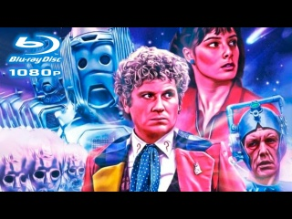
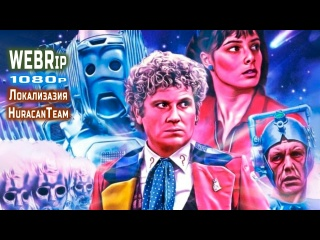
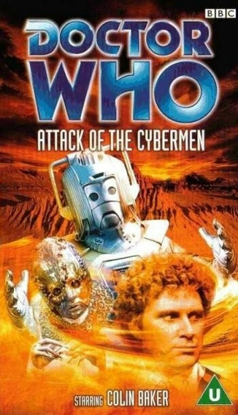
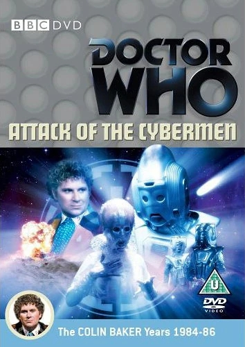
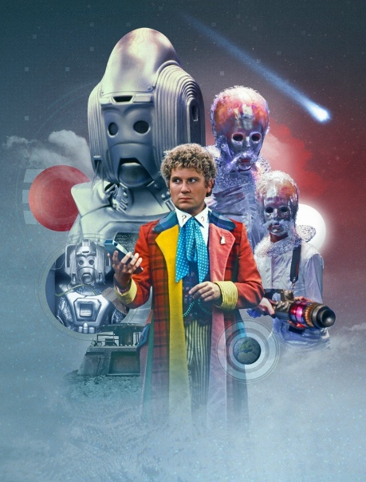
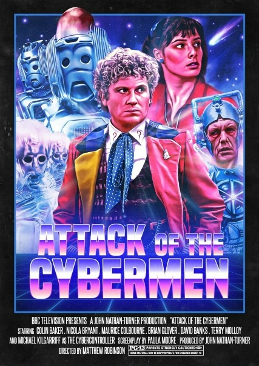
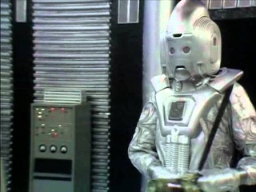

Субтитры: Русские и Английские |  |
|---|---|
с фанатской локализацией видеоряда (HuracanTeam) Субтитры: Русские и Английские |  |
Attack of the Cybermen
Дата выхода: 5-12 января 1985
Формат: 2 эпизода по 45 мин.
|
ТАРДИС материализуется в Лондоне 1985 года. Шестой Доктор замечает временную аномалию и выходит на след наёмника Литтона — того самого, что работал на далеков в «Воскрешении далеков». А под улицами Лондона уже обосновались киберлюди, и их план масштабен: они собираются изменить ход истории, спася свою родную планету Мондас от гибели.
Первый сезон классического сериала с 45-минутными сериями вместо привычных 25-минутных — так сократили количество эпизодов в год, не урезая хронометраж. Серия отсылает к «Десятой планете» — первой истории с киберлюдьми и первой регенерации Доктора (Хартнелл в Траутона). А Литтон стал одним из немногих злодеев, к которым зрители прониклись симпатией, — и его судьба в этой серии многих расстроила.
 VHS - ноябрь 2000 |  DVD - март 2009 |  Blu-ray - 20 июня 2022 * Версия в нашей группе |
|---|


